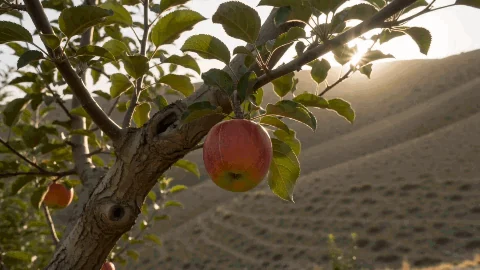

调研报告
科技赋能与实践育人：高校铸牢中华民族共同体意识的创新路径与对策研究
寒假走访三所院校后，队员写成两万余字的报告。石河子大学把民族团结教育融入学生日常管理，伊犁师范大学带学生沿湟渠走访、听故事、再开讲。对照这些经验，团队提出整理老军垦口述史、以三维建模记录水利遗址等建议，让青年能从一件文物、一段亲历讲述进入这段历史。
关于推动阿克苏特色林果产业数智化与农文旅融合发展的建议
暑期访谈发现，企业有了追溯平台，果农仍要在农忙中承担记录工作。团队在近万字专题咨政报告中建议，让消费者扫码后既能核验产地，也能认识种植者和果园；将果园体验、柯柯牙治沙史与研学线路连起来。据暑期总结报告，这份建议已获阿克苏地区人大采纳。
柯柯牙生态治理调研
在纪念馆，队员循着历史照片、遥感影像和实物，整理引水、平地、改土、植树的过程。报告把治沙史与苹果产业放在一起看：防护林让果树能够生长，果园也让到访者有机会了解这片绿洲的来历。
社区与乡村的交往观察
队员记下阿克苏阳光里社区每月 16 日的百家宴，也记录了居民参加助老等志愿服务后用积分换生活用品的做法。在和田，观察转向庭院经营与村巷往来。报告用这些可以再走访、再追问的场景，说明共同劳动和相互照应怎样成为日常。
资料来源 寒假成果大报告第 35–46 页；暑期成果大报告第 23–32、38、42–44 页；暑期总结报告第三部分、暑期汇报第 18 页。
数字作品



《重走戍边路》
基于魏德友老人的戍边经历，队员将雪山巡边、军民分享饮水等片段编成第一人称互动故事。长按擦拭界碑、倾斜设备倒水，是故事里的两个动作。
《一颗苹果的故事》
同一次果园走访留下了两种成果。队员把果农和企业关心的问题写进调研报告，又把在红旗坡采集的影像带回创作组，用生成式人工智能制作阿克苏苹果品牌动画，让更多人认识这种水果的产地。
“石小榴”和队员群像
寒假里，队员把队徽画成吉祥物，又设计了新年形象和表情包。小程序首页上，每位队员都有自己的卡通形象，大家围着队徽站成一圈。团队还把队伍简介等内容编成 16 页画册，带到交流现场送给接待师生。
红脉数基 · 为创作整理史料
文献、照片和口述材料原本分散保存。项目将它们整理为红色文化多模态知识库，让创作者在生成图文和历史场景时能够调用相关材料。
红途智创 · 从故事到可探索的场景
项目以沙海老兵的人生轨迹为线索，探索用多个智能体协作生成三维互动游戏。按暑期总结时的进度，团队正在筹备内测，计划邀请新疆高校和研学基地参与体验。
资料来源 寒假成果大报告第 51–56 页、寒假汇报第 16–17 页；暑期总结报告第三部分、暑期汇报第 16–18 页。
校地共建与宣讲
阿克苏的工作站与和田的实践基地
2026 年 8 月，北航“红石榴”党建工作站在阿克苏揭牌。8 月 21 日，队伍又在和田县稻香村钱学森沙产业科技小院为实践基地揭牌。团队在报告中提出接下来的合作办法：假期进村收集需求，返校后继续开发，请当地伙伴试用、反馈，下一季回访时再检验。
稻香书院里的宣讲
在“学习强国”线下体验空间，队员看到了社会各界捐赠的藏书、核桃木工艺品和传统乐器。红石榴宣讲团在这里开展主题宣讲，用同龄人的视角讲述在新疆实践的见闻。
回到和田站现场 →资料来源 暑期成果大报告第 38、40–42 页；暑期汇报第 20、23 页。
荣誉成果
红石榴实践队 · 寒假社会观察
据暑期成果报告记载，实践队获北京航空航天大学 2026 年寒假社会观察实践计划一等奖。
红石榴宣讲团 · 《石榴结籽，科技铸疆》
在首届“强国先锋 同心筑梦”北京高校铸牢中华民族共同体意识主题宣讲展示活动中，宣讲团获“精品宣讲成果奖”和“精品宣讲稿”。
阅读北航新闻网报道 ↗“红脉数基”项目 · 创新创业
据暑期总结及汇报，该项目获“挑战杯”首都大学生创业计划竞赛擂主，并获国家级大学生创新创业训练计划项目立项。
资料来源 暑期成果大报告第 9 页；暑期汇报第 16、20 页；暑期总结报告第三部分。
媒体报道
寒假 · 从军垦社区到校园
寒假成果报告收录了人民日报客户端、中国新闻网、中国青年网等平台的报道记录，以及青年北航、同心北航、石河子共青团等公众号推送。团队的原创图文收在微信公众号“石榴观察站”。
暑假 · 南疆实践与工作站
暑期汇报记录了中国日报、中国新闻网、北京青年报等媒体的报道。北航新闻网也转载了实践队南疆调研及党建工作站的相关报道。
阅读已收录的媒体原文 →资料来源 寒假成果大报告第 47–51 页、寒假汇报第 18 页；暑期成果大报告第 45 页、暑期汇报第 22 页。